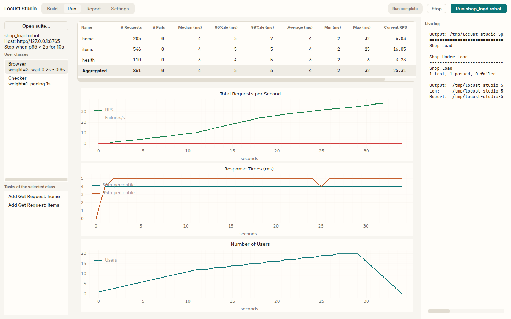
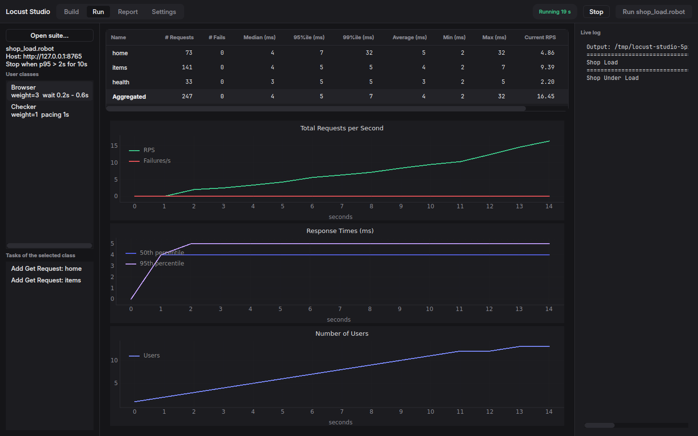
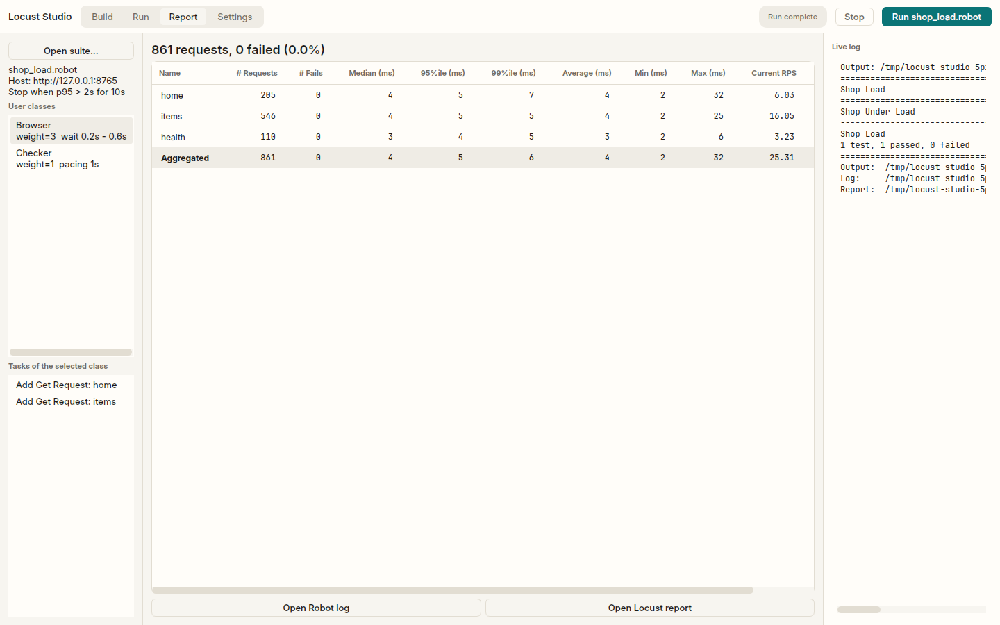

Load tests you write as Robot suites.
A Robot Framework library that builds and runs Locust. Write the load in keywords, watch it in Locust Studio, or bring a k6 script you already have.
Three ways in
Write it in Robot
Build users, run them headless, check the stats.
*** Settings ***Library LocustLibrary *** Test Cases ***Shop Under Load Create Load Test http://127.0.0.1:8765 ... allowed_hosts=127.0.0.1 Add Stop Rule p95 > 2s for 10s Add User Class Browser weight=3 Set Wait Time 0.2s 0.6s Add Get Request items ... /items.json ... expected_text=sku Add User Class Checker weight=1 Set Pacing 1s Add Get Request health ... /health.txt Set Load Stages 10s:10 20s:20 ... 5s:0 Run Load Test max_users=50 Should Meet Response Time aggregated ... p95 500ms Export Report shop
Watch it run
Open a suite in Locust Studio and press Run. The table and charts update every second.

locust-studio
Bring your k6 script
Stages, thresholds and plain requests become keywords.
export const options = { stages: [ { duration: '30s', target: 20 }, { duration: '1m', target: 20 }, { duration: '10s', target: 0 }, ], thresholds: { http_req_duration: ['p(95)<500'], http_req_failed: ['rate<0.01'], },};
rflocust-k6 checkout.js
Your k6 script, as a Robot suite.
rflocust-k6 reads the options with k6 inspect, scans the exported functions for plain HTTP calls, and writes a Robot project. This is its real output for the script on the left.
import http from 'k6/http';import { sleep } from 'k6'; export const options = { stages: [ { duration: '30s', target: 20 }, { duration: '1m', target: 20 }, { duration: '10s', target: 0 }, ], thresholds: { http_req_duration: ['p(95)<500'], http_req_failed: ['rate<0.01'], },}; export default function () { http.get('http://127.0.0.1:8765/items.json'); sleep(1);}
Test Checkout Load [Documentation] Builds the users, runs the load, then checks it. Build Checkout Users Run Checkout Load Check Checkout Load Build Checkout Users [Documentation] One user class per k6 scenario, weighted by its peak users. Create Load Test ${HOST} verify_tls=${True} proxy=${PROXY} Add User Class default weight=20 Set Wait Time 1s 1s Add Python Task default checkout_tasks.default Run Checkout Load [Documentation] Runs the converted k6 load profile headless. Set Load Stages 30s:20 60s:20 10s:0 Run Load Test max_users=100 Export Report checkout Check Checkout Load [Documentation] The converted k6 thresholds. Should Meet Response Time aggregated p95 500ms Should Meet Error Rate 1%
| k6 | LocustLibrary | Report |
|---|---|---|
ramping-vus stages | Set Load Stages | mapped |
constant-vus, shared-iterations | Run Load Test with users, run time and iterations | mapped |
http_req_duration p50 to p99.9 | Should Meet Response Time | mapped |
http_req_failed rate | Should Meet Error Rate | mapped |
| arrival-rate executors | Run Load Test with looping users | approximate |
| a call the scanner cannot read | a Python task that raises until you port it | hand port |
The converter never runs k6 run. k6 inspect runs the script's init code as you, so convert only scripts you trust. The full mapping.
Run the suite. Watch it.
Locust Studio opens a suite, runs it under Robot at low priority, and charts it every second.

Studio reads the suite with a Robot dry run, so nothing is sent until you press Run. The sidebar lists each user class, its pacing and the stop rules.
When the run ends, the Report tab opens the Robot log and the Locust HTML report. Studio has a dark and a light theme, and runs on Windows and Linux.

It stops before it hurts anyone.
A user ceiling, a host allowlist, stop rules and a failure breaker keep a run in bounds. Read the limits before you point a run at a host you do not own.
- Safety limitsEvery limit and how to set it
- Keyword referenceAll 28 keywords, with arguments
- Library guideUser classes, Python tasks, shared data, reports
- ContributingSetup, checks and the rules a change keeps